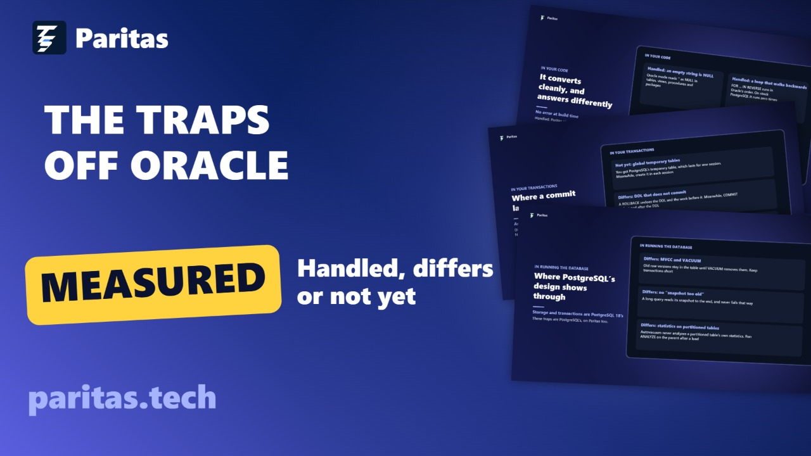
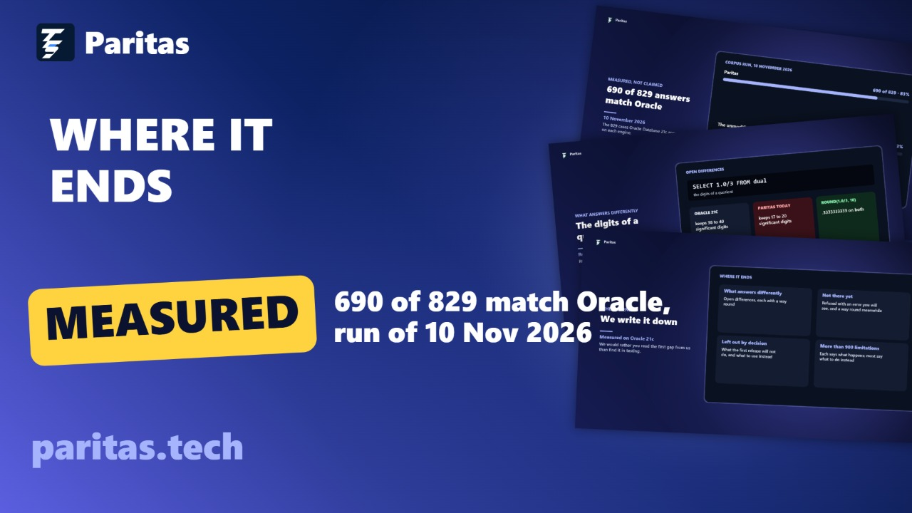

Films and updates
Short films and the latest news from Rutba, Rutba Office, Tech Style and TrustList, in one place.
Tech Style: we build trusted technology that helps businesses grow
We are an independent UK technology company, and we build and own the software we ship.
Rutba
Business software that keeps one set of records for the whole company, with a window onto it for each team.
57 films in 12 series
Orders: how toCommerce: how toThe productsPeople: how toBooks: how toInventory: how toAll 12 series
Rutba Office
A free office suite for Windows in one download, with no account to make. The code is open source.
162 films in 25 series
One film for each appHow toVideoMailLockerWhat's new in each releaseAll 25 series
Tech Style
An independent UK technology company. We build and run our own software, and publish what we can as open source.
24 films in 5 series
Oracle to PostgreSQLPartners: common questionsInfrastructure you run yourselfFree developer toolsStrapi plugins and tools
TrustList
Software and service providers compared on evidence. None of the rankings is for sale.
12 films in 5 series, and the daily briefs
Daily: Funding newsDaily: NewsDaily: Security advisoriesCommon questionsDaily: Business news
Newest films
- Tech StyleWe build trusted technology that helps businesses grow20 Nov 2026
- Funding news, 19 NovemberTrustList daily digest20 Nov 2026
-
 News, 19 NovemberTrustList daily digest20 Nov 2026
News, 19 NovemberTrustList daily digest20 Nov 2026
-
 Security advisories, 19 NovemberTrustList daily digest20 Nov 2026
Security advisories, 19 NovemberTrustList daily digest20 Nov 2026
- ParitasBecome a development partner, and your migration comes first20 Nov 2026
-
 Moving an Oracle application to Paritas, step by step20 Nov 2026
Moving an Oracle application to Paritas, step by step20 Nov 2026
-

The traps of moving off Oracle, and what Paritas does about each20 Nov 2026 -

ParitasWhere Oracle compatibility ends, as we measured it20 Nov 2026 -
 Is your TrustList listing wrong?Claim it, or write to us20 Nov 2026
Is your TrustList listing wrong?Claim it, or write to us20 Nov 2026
The latest TrustList brief
Friday 20 November 2026: 25 stories from TrustList, in rankings, funding news, security advisories, business news, news and hr news.